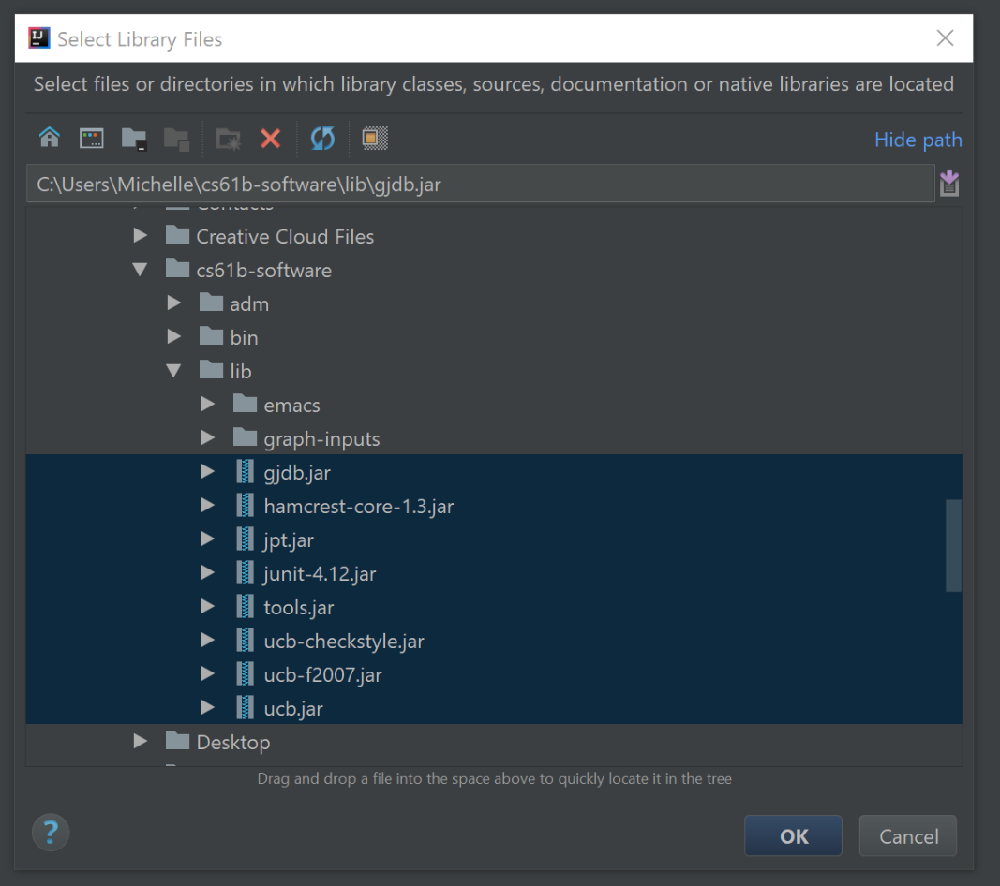

Navigation
- Before You Start
- Introduction
- Git Reintroduction
- Git Exercise
- Git Checkoff
- Software Setup
- IntelliJ Setup
- Using IntelliJ
- IntLists
- Recap
A. Before You Start
- Everyone should now be registered (with us, that is; the Registrar is a separate matter) and have a repository.
- Make sure that you've finished Lab 1 in its entirety.
B. Introduction
In this lab, we will be doing a Git exercise, finishing our setup (Whew!), and introducing to you a powerful IDE called IntelliJ. Then, we will learn about IntLists and destructive vs. non-destructive methods.
As usual, you can get the start files for this lab from git. Make sure you have
committed and pushed any current work in your repo directory, and then use
git fetch shared
git merge shared/lab2 -m "Start lab2"
git pushC. Git Reintroduction
In 61B, you'll be required to use the git version control tool, which is wildly popular out in the real world. Before you proceed, read sections A-C and section F of Sarah Kim's Using Git Guide. Part F mentions GitHub, a website used to store users' remote repositories. You will not be using GitHub in this course, and instead your remote respositories are being stored on the staff server which was used in lab1.
D. Git Exercise
Next, as part of your lab checkoff, you will be working through a small git workflow by setting up a git repository and making a couple commits to the repository. An academic intern or TA will look at the git repository during checkoff to ensure that it is in a good state. Please do the following actions, read resulting messages, and try to visualize what is happening along the way. If you’re stuck on a step at any point, don’t hesitate to ask a TA or an academic intern for help!
- Create a directory called lab2-checkoff. You can put this directory anywhere on your computer (not in your CS 61B repo) and this folder will not be submitted.
- Move into the lab2-checkoff directory, and initialize a git repository in this directory.
- Create a file called
61b.txtin any way you’d like. In this .txt file, add the text "61b version 1" into it. - Create another file called
61c.txtin any way you’d like. In this .txt file, add the text "61c version 1" into it. - Begin tracking only
61b.txt, and create a new commit containing just this file, with the following commit message: "Add 61b.txt". - Make a modification in
61b.txtby changing the text in the file to: "61b changed to version 2". - Make another commit, this time containing both
61b.txtand61c.txt. The commit message should be: "Update 61b.txt and add 61c.txt". - Finally, make one more modification to
61b.txtby changing the text in the file to: "61b changed to version 3". Don’t commit this version.
At this point, if you were to type in git status, something close to this
should show:
Also, if you were to run git log, something close to this should show:
Be sure to save this repository and directory until you get checked-off by an academic intern or TA. See section E for more information on getting credit for the lab checkoff. Along with other short conceptual questions involving git, remotes, and ssh, you will be asked to revert 61b.txt back to the earliest version of the file, so make sure you know how to do this! Hint: Look into the checkout command.
Note: Be careful when using the checkout command, as your repo might end up in an unexpected state. Specifically, if you see something about your repository being in a detached HEAD state as a result of a checkout command, that is something we don't want. To get out of detached HEAD state and go back to master, run
git checkout masterE. Git Checkoff
Find a partner who has also finished the git exercise (part D) and put both your
names down on the lab whiteboard to get your git exercise checked off in pairs.
The TA or academic intern, upon completion of the lab checkoff, will tell you
a magic word. Place this word in a new file called magic.txt in your lab2
folder. If there's a wait, please move on to the next parts until your name is
called.
F. Software Setup
Recall from Lab 1 that you weren't able to run your testing files on your personal computer. That's because we did not provide you the necessary software to do so. Upon completion of this section, you should no longer have any issues with missing packages.
Regardless of if you're using a lab computer of a personal computer, execute the following two commands. If you plan to use your personal computer for development in this class you must do this on your personal computer otherwise not all aspects of the course will work.
cd
git clone cs61b-taa@ashby.cs.berkeley.edu:cs61b-software cs61b-softwareThese two commands place a cs61b-software folder in your home directory.
This folder should be kept separate from your repo folder.
Mac/Linux Setup
You should have a hidden file called .bash_profile in your home directory.
Open this file (with either a text editor or Vim) and add the line:
Important: Add this line to a file, DON'T run it on the command line.
source $HOME/cs61b-software/adm/loginThen, on your command line, execute:
Important: Run this line on the command line, DON'T add it to a file.
source ~/.bash_profileThis should set your PATH and CLASSPATH variables properly.
Windows Setup
Follow the instructions to set up your CLASSPATH. This will be very similar to how you set the PATH variable in lab1.
You'll need to use the Environment Variables button on the Advanced tab under Advanced System Settings, which you'll find in various places depending on what version of Windows you're running. Similarly to what you did in Lab 1 for PATH, you'll want to add the variable CLASSPATH with the following values:
[Path to home directory]\cs61b-software\lib\*
.Note: To be clear you should be adding two things to CLASSPATH (this variable is the list of locations to look for .class files to run java programs). 1. [Path to home directory]\cs61b-software\lib* which will include all of the library files. 2. . which will include all files in the current directory.
If your version of Windows requires that you edit the string directly, and you do not already have a CLASSPATH, you should set CLASSPATH to the value
[Path to home directory]\cs61b-software\lib\*;.(that's a semicolon, not a colon).
Of course, if you have put cs61b-software somewhere other than in your home directory, then make the appropriate modification to these paths.
Finally, edit your PATH variable using the same technique you used for CLASSPATH (Windows calls it Path) to add our bin directory. That is, add a new value with
[Path to home directory]\cs61b-software\binto the Path. Alternatively, if your version of Windows requires that you edit the string directly, you should append
;[Path to home directory]\cs61b-software\binto the end of your Path so that you will be able to run style61b and gjdb directly (again, modify appropriately if you've put the cs61b-software directory in a "non-standard" location).
G. IntelliJ Setup
IntelliJ is an IDE (Interactive Development Environment). It's like a text editor (e.g. Sublime Text) but it's chock full of extra features. In order to run your files in this special environment where we can work our IDE magic, we need to import our files into a project. Fortunately, this is a fairly painless process. You should be using IntelliJ for every homework, lab, and project that comes your way this semester!
Installing IntelliJ
Again, if you're only planning on using the lab computers, skip the setup. If not:
- You'll need to install the Community Edition of IntelliJ from the Jetbrains website.
- After selecting the appropriate version for your OS (Mac OSX, Windows, or Linux), click download.
- Run the install file and follow the prompts to install IntelliJ onto your computer. You can stick to all the default settings.
Installing the CS 61B and Python Community Plugins
- Start up IntelliJ. If you're on the lab computers, you can start up IntelliJ by using the command
/share/instsww/bin/idea.shin a terminal window. - In the Welcome window, click the Configure -> Plugin button on the bottom right of the window.
- Click the button labeled Browse Repositories... on the bottom.
- In the window that appears, enter "CS 61B" in the search bar at the top. The CS 61B plugin entry should appear.
- Click the green Install button.
- Wait for the plugin to download and install.
- Now, repeating steps 3-6, install the "Python Community Edition" plugin.
- Again, repeating steps 3-6, install the "Java Visualizer" plugin.
- Click the grey Restart IntelliJ IDEA button to finalize the installation.
NOTE: Before you move on make sure that you have successfully added the CS61B plugin, the Python Community Edition plugin, and the Java Visualizer plugin before moving on.
Creating Projects
The following instructions apply for both initial setup and for future assignments. After running git fetch/merge to retrieve a new assignment, you will notice that you have a new assignment directory (next week, you'll get lab3/). Therefore, you can simply run through the following steps again. Don't be intimidated by the long section; this is because we've carefully screenshotted every step. In future iterations, setting up will likely involve pressing next for all steps and, if IntelliJ asks you to overwrite various housekeeping files (such as .iml files) because they already exist, respond "Yes" or "Overwrite" to those popup windows. This is so IntelliJ can automatically mark the new directories for your assignment for you as opposed to you manually marking source folders and/or modules.
- Start up IntelliJ. If you're on the lab computers, you can start up IntelliJ by using the command
/share/instsww/bin/idea.shin a terminal window. Upon opening IntelliJ, click on the "Import Project" option.
Find and choose the directory of your current assignment (for today's lab, it should be
~/repo/lab2), then press the OK button.Make sure "Create project from existing sources" is selected and press next. You shouldn't have to change anything at this step.
Leave these fields untouched and press next.
Do nothing here and press next. For context, IntelliJ is automagically detecting what your Java files are and self-configuring itself to edit and run them.
You may not actually see this next window pop up. If it does, click next. If it doesn't, that's fine.

You may not actually see this next window pop up. If it does, click next. If it doesn't, that's fine.
You may not actually see this next window pop up. If it does, typically it should look like the screenshot below. If you get a window that matches the screenshot below, then your project is setup and you may click next and skip steps 10 to 12. If you are missing either the Java SDK or Python on the left sidebar, go to their respective steps below to add them. For the first time you use IntelliJ, you must do steps 10 to 12.
Click the plus in the upper left corner and click jdk from the drop-down menu.
Find where your jdk is saved, select it, and press the OK button. On a Mac, it is at "/Library/Java/JavaVirtualMachines/openjdk-12.0.2.jdk/Contents/Home/". If you're on Windows, your path may look like "C:\Program Files\Java\jdk-12.0.2". If you're on a lab or Ubuntu computer, it should be at "/usr/lib/jvm/java-12-oracle/". The actual number after jdk-12 may differ depending on which update of Java 12 you downloaded. It does not matter as long as you are using Java 12.
Next, we'll set up your Python SDK. Click the "plus" again, and this time click Python SDK -> Add local. This should lead you to a new window where you should then hit “System Interpreter” and click OK. If that does not work instead do the following. Find where your python3 executable is saved, select it, and click "OK". On a Mac or on Ubuntu, you can figure out the path to python3 by typing
which python3into your terminal. On Windows, you can find python3 by inspecting your environment variable settings.Once your screen looks similar to the screenshot in step 9, press "Next", then "Finish". Once you've pressed finish, you should see something really similar to the following image. You may need to click the little triangle next to lab2 in the top left to get the source files (ExampleFile.java and AnotherFile.java) for lab2 to show up.
Finally, you'll want to import libraries. You'll have to do this for every project you set up. Click File -> Project Structure at the top left of IntelliJ. A window should pop up, and you should click "Libraries" on the left panel of this window. When you've done so, it'll look as shown below:
Click the plus in the top left of this window and pick Java from among the given choices. This will pop up a window. Navigate to your cs61b-software's lib folder, and select all of the jar files. It should look something like this (the jar files in the image below may not match exactly with what you have in your folder; that's okay). Press OK several times to exit.

You should be all done now! Again, this may seem like a lot, but for most of these steps, all you did was click "Next"! And some of these steps like setting up your JDK and Python will only be done once.
H. Using IntelliJ
Running Java Files
Let's get more familiar with the IntelliJ interface.
Click on the file IntList.java from the left sidebar. Next, go to the top of the screen
and press Run -> Run... .
A small box should appear. You should click on IntList, and the java file will run.
A box should appear on the bottom of the screen; this box will output the result of your program. Right now, it looks like we have an exception (error):
NOTE: If you did not get this exact error go to File -> Project Structure -> Projects and make sure that the selected project SDK is Java 12 not python 3.6 (the option should just be called "12").
The blue link IntList.java:xx indicates the file and
line number at which the exception occurred.
We can click on it to go directly to that
line in our code.
It looks like that particular print statement prints Hello and then whatever args[0] is...
What is args[0]? It is an argument that you provide to a Java program when you run it in the command line. We get an error here, because we don't run this program through the command line, so there was never an option for us to provide the command line argument the program is looking for. How can we provide command line arguments to our program, if we don't run it from the command line? To mimic
this functionality in IntelliJ, we first need to click on Run -> Edit Configurations in the top bar. On the blank that says Program Arguments, put your name. After you have done this,
click OK. Let's run our file again. Go to Run -> Run 'IntList'.
You should get an output: Hello, <Your Name>.
Now, let's take a look at the main method again. We have created an IntList for you.
On the line after IntList L1 = list(1, 2, 3, 4, 5);, type sout then press Enter. Did you
see what happened? IntelliJ converted sout to System.out.println();, which is how we print
things in Java. Cool right? Throughout this course, you will learn even more IntelliJ functionality
that makes coding in Java much easier.
Inside the parentheses of your new System.out.println();, add L1. Now run IntList again.
Verify that your output is now Hello, <Your Name> on the first line, and [1, 2, 3, 4, 5]
on the second line.
Debugging
Let's try running the debugger on IntelliJ. The debugger is single-handedly the most important tool you will use in this course.
Many of you have had lots of experience with using print statements to probe what a program is doing as it runs. While print statements can be very useful for debugging, it takes less time and mental effort to find a bug if you use a debugger.
First, add another print statement to the main method to print the sum of the IntList we provided for you. There is a sum method that we have provided you. Declare an integer variable, sumL1, into which you can save the returned value from sum. Then, print sumL1. When you are done, run the main method again. You should get a third line with the sum of the integers in the IntList, [1, 2, 3, 4, 5].
You may have noticed that the provided sum method returned a wrong number. The sum should be (1 + 2 + 3 + 4 + 5 =) 15, but sum returned 5. Clearly, there is a bug in the code of sum and we would like to figure out where it is exactly. To do so, we will use the debugger.
The debugger will allow us to investigate the code, line by line, and see what is the state of all of the program's variables at every step. So, to begin using the debugger, we must specify at which line we want to start our "investigation process". To do so, we set a breakpoint near a line of choice. Let's set a breakpoint on the line IntList L1 = list(1, 2, 3, 4, 5);, by clicking once to its left. Then,
go to Run -> Debug 'IntList'. The debugger now opens on the bottom of your screen. The
program execution has been paused at the breakpoint we've just set! From here, we can step
through each line of code to find bugs.
Near the top of the debugger console, you will see some blue and red arrows. Hover your cursor
over them to see what they say. Then, click the arrow that says Step Over. This button allows us to continue the execution to the next line of code. Note that we "stepped over" the code contained in list method. Since we know it works properly, there is no reason to debug it.
Keep stepping over until you get to the call to the sum method. At this point, we want to Step Into this method call in order to debug sum. Again, hover over the blue arrows in the debugging window to find the Step Into button, and click it.
Once you are in the sum method, continue to step over the code until you find what is the problem. Pay attnetion to the "Variables" window at the bottom to see what values are being updated incorrectly. Fix the code in sum such that the method will return the correct result.
When you are done, you can exit the debugger by clicking on the Stop button, which is a red square in the debugging console. Alternitavely, you can also click on the Resume button, which will have the debugger execute all the remaining code until another breakpoint is reached, or until the program terminates.
Creating JUnit Tests
Unlike the previous sections, you do not have to explicitly do this section. However, you should read the section below.
We have provided you a second file, called IntListTest.java. We have also written some
test methods for you. Normally, to generate a JUnit test file, open to the file you'd like
to test, then go to Navigate -> Test. A small window will pop up; click Create New Test....
A new window should open. For testing library, select JUnit5 from the dropdown menu. You will
be able to check boxes to indicate which methods you want to test for. Although you can always write
in more tests, the check box option is nice since IntelliJ will automatically generate the method
header for these tests for you. You can run these tests the same way you'd run a regular Java file
(as described above).
Again, we have provided you the testing file for this lab, so you will not need to generate a new test file.
Using the CS 61B Plugin (Optional)
Style Checking (Optional)
In this class, you will eventually be required to make sure your code conforms to the official style guide, which can be found on the course website under "Resources". The plugin includes a helpful style checker, which will check your code and inform you of any style errors and their locations.
To run the style checker, simply right click any file or directories you want to check, and select Check Style in the menu that appears:
Click it, and the style checker will run. A tool window will appear with the results of the style check, and a list of any errors. Click the links to jump directly to the problematic line of code:
Java Visualizer (Optional)
The plugin contains a built-in version of the Java Visualizer, a tool similar to the Python Visualizer you may have used in CS 61A. This tool is intended to help you debug and understand your code, and is integrated into IntelliJ's Java debugger.
To use the built-in visualizer, debug your code, setting breakpoints as necessary. When your code stops at a breakpooint, you can click the Java Visualizer icon:

The Java Visualizer will appear, displaying the stack of the currently paused program:
As you continue to step through and pause your code, the visualizer display will update accordingly to show you what's going on in your program.
Finishing Up
There are many more convenient shortcuts that you can find in IntelliJ. Poke around the IDE a little more, and don't be afraid to Google the nuances!
I. IntLists
Introduction to IntLists
As discussed in Wednesday's lecture, an IntList is our CS61B
implementation for a linked list of integers, which you should have
already seen if you took CS 61A or other introductory programming
courses.
As we saw in lecture, an IntList has a head and tail property.
We named it IntList because a set of these objects can represent a list
(sequence) of Java int values.
The head of the first IntList object is the first element of the list.
The tail (another IntList) represents the list of remaining elements
(that is, it is a pointer
to the IntList object whose head is the second item of the list).
As a result of this correspondence between sets of IntList objects and
lists, we often conflate pointers to IntList objects with the lists
they head and use the term "IntList" to refer both to individual IntList
objects and to the entire set of objects reachable by following the tail
pointers. Usually, the distinction is clear from context.
In the IntList.java file, we've added a method called list, which makes it easier to create IntLists.
For example, to create an IntList containing the numbers 0, 1, 2,
and 3, we could use the method as follows:
IntList myList = IntList.list(0, 1, 2, 3);which will create the IntList 0 -> 1 -> 2 -> 3 -> null
myList.headreturns 0myList.tailreturns 1 -> 2 -> 3 -> nullmyList.tail.tail.tailreturns 3 -> nullmyList.tail.tail.tail.tailreturns null
The IntList.list method makes it much easier to create
IntLists compared to the naive approach:
IntList myList = new IntList(0, null);
myList.tail = new IntList(1, null);
myList.tail.tail = new IntList(2, null);
myList.tail.tail.tail = new IntList(3, null);There is also a convenient toString method. As we'll see later in the course,
this is a useful method, because among other things, the standard print...
methods in System.out use it whenever they are asked to print a value
of type IntList, so that
System.out.println(myList);will print
[0, 1, 2, 3]Likewise, the "+" (append) operation on values of type String will
use the toString method to figure out what string to append when adding an
arbitrary object to a String.
Destructive vs. Nondestructive
Let's consider a method dSquareList that will destructively square every item in a list.
IntList origL = Intlist.list(1, 2, 3)
dSquareList(origL);
// origL is now (1, 4, 9)Where dSquareList is defined as follows:
public static void dSquareList(IntList L) {
while (L != null) {
L.head = L.head * L.head;
L = L.tail;
}
}This is a classic example of a destructive method. It iterates through
the list and squares each item, causing the values linked by L to
change. In other words, after calling this method once on L, every
element in L will be squared.
Examining the code above, we see that the origL variable contains a
reference to the created IntList. The value of this variable never
changes. By contrast, the L variable in dSquareList moves around
inside the method when the line L = L.tail is executed.
As we iterate through the method, origL always points to the
beginning of the IntList, but L moves to the right until it
reaches the null value at the end.
The reason we say that dSquareList is destructive is that we change the
values of the original IntList objects, destroying the original data.
As we go along, we replace each head value with its square.
By the end of the method, L is null, and origL is still pointing
at the beginning of the IntList, but every value in the IntList
that origL points to is now squared.
If these ideas don't yet make total sense, ask a TA or lab assistant to draw a diagram of the code execution. Pointers and IntLists might seem confusing at first, but it's important that you understand these concepts!
Now, look at at squareListIterative and squareListRecursive. These
methods are both non-destructive. That is, the underlying IntList
passed into the methods does not get modified.
Look at the recursive version--try to reason why this is non-destructive. If you don't understand this yet, you should make sure you do before proceeding.
Now look at squareListIterative. The iterative version of a non-destructive
method is often quite a bit messier than the recursive
version, since it takes some careful pointer action to create a new
IntList, build it up, and return it. Try to understand what this
code is doing.
Finally, look at the test method testdSquareList in
IntListTest.java. This test checks whether or not
dSquareList is destructive by making sure that the original list is
mutated.
You're done reading code for now. Phew!
Your Task
Create a test for squareListRecursive that checks that it is not destructive. You
will also want to test whether or not squareListRecursive
is correct. Once you have checked both requirements and your own test passes,
you're done!
Submit this lab per the submission guidelines from Lab 1 (pushing and tagging). You should have:
- Printed out the IntList in the IntList.java:main method.
- Fixed the bug in the IntList.java:sum method.
- Written a unit test in IntListTest.java that checks if squareListRecursive is non-destructive and outputs the correct IntList.
- Included the magic word from the git checkoff in
magic.txt. Be sure you usegit addon this file to include it in your commit and submission.
J. Recap
- IntelliJ is an amazing tool. Use it! Just remember to set up your project the same way described in this lab every time you start a new project.
- The debugger in IntelliJ is the single most powerful tool you are given. When in doubt, use it. When not in doubt, use it anyways.
- Testing and debugging are the two most important skills you will learn in this course. If you choose to learn nothing in this course but two things, learn these two! If you plan on continuing your computer science career, you will need these skills. In the real world, the process of writing tests and debugging probably consumes most of time in a project. Never think that because you have "finished coding", you are anywhere near being finished!
- Do not rely on "print" statements (although they can be useful in small cases) to test your program! Many students simply rely on "print" statements, which mess up one's program, produce incomprehensible volumes of output, and somehow never manage to get removed.
- Oh yeah, IntLists are cool too! You will work with them more in the next lab.